Префектура Кумамото · Хитоёси и Кума · сётю
Кума-сётю: по винокурням Хитоёси, где рисовый сётю делают пятьсот лет
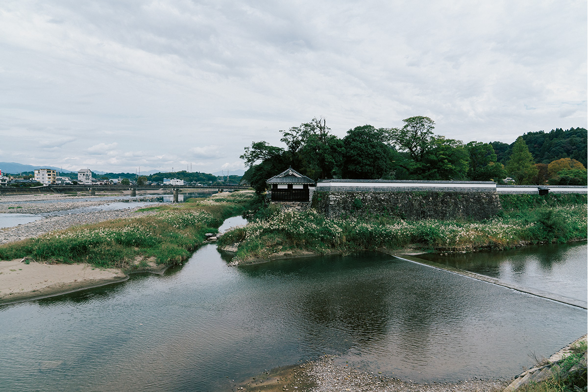
На юге префектуры Кумамото, в горной котловине вокруг Хитоёси, больше пятисот лет делают рисовый сётю. Винокурни здесь охотно открывают двери: можно заложить своё сусло, собрать купаж или выпить подогретый сётю из старинного кувшина.
Край
Рис, вода и род Сагара
Хитоёси и уезд Кума лежат на самом юге префектуры Кумамото. Со всех сторон котловину обступают зелёные горы, с них стекает чистая река Кума, одна из трёх самых быстрых рек Японии, а днём и ночью здесь сильно разнится температура. Такой климат хорош для риса, и рис тут выращивали всегда.
Это оценил род Сагара, правивший краем начиная с периода Камакура (XII–XIV века). Сагара поощряли винокурение по всему своему княжеству, и с эпохи Муромати (XIV–XVI века) из хорошего местного риса и воды начали гнать рисовый сётю.
Теперь у него есть имя: «кума-сётю». Рисовый сётю Хитоёси и Кумы получил статус географического указания по правилам ВТО, а местные винокурни регулярно берут награды на французском конкурсе Kura Master и на токийском конкурсе виски и крепких напитков.
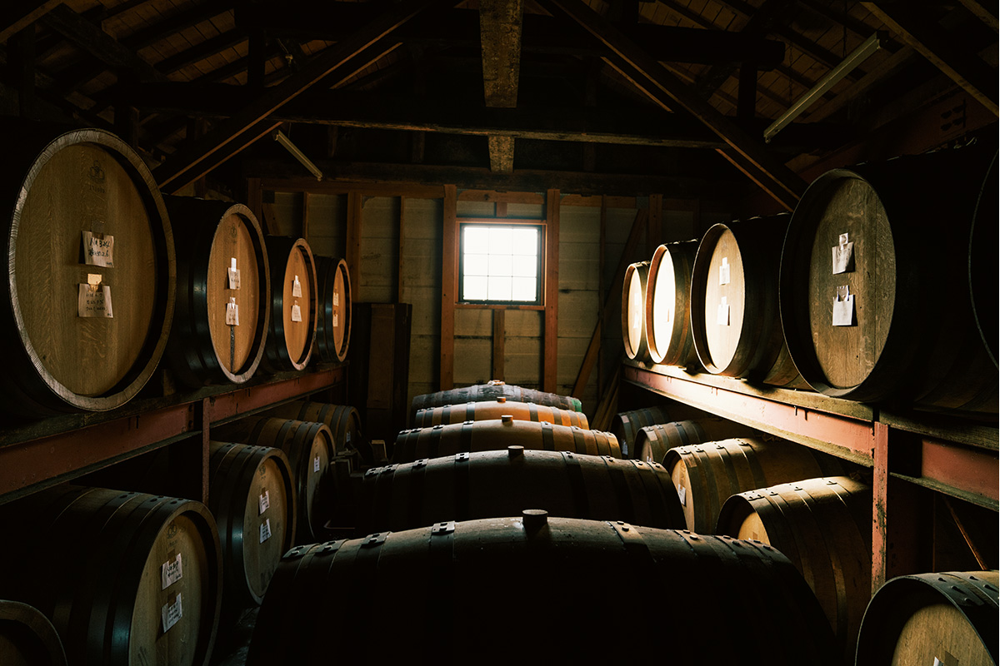
Чтобы называться кума-сётю, напиток должен отвечать трём главным условиям: сырьём служит только рис, сусло ставят на подземной воде Хитоёси и Кумы, а всё от перегонки до розлива делают здесь же. При этом вкусы у кума-сётю очень разные. Путь везде один: кодзи, первое сусло, второе сусло, перегонка, фильтрация, выдержка, розлив. Но на каждом этапе винокурня что-то делает по-своему, и сильнее всего на вкус влияют два из них: перегонка и выдержка.
Перегоняют двумя способами. Обычная перегонка при атмосферном давлении идёт при высокой температуре, это старый метод: из сырья выходит много веществ, сётю получается насыщенным и ароматным и хорошо переносит долгую выдержку. Перегонка при пониженном давлении появилась в начале 1970-х годов: спирт отгоняют примерно при 40 °C, и вкус выходит лёгким и чистым.
Молодой сётю очень резок, поэтому без выдержки не обойтись. В чём его держат, в глиняных кувшинах, бочках или эмалированных баках, и сколько лет, тоже меняет характер напитка. В Хитоёси и Куме 27 винокурен, и у каждой свой почерк, так что свой кума-сётю найдёт почти любой.
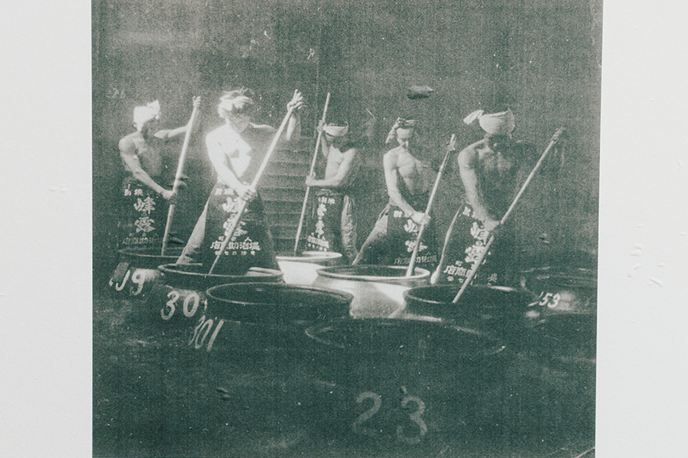
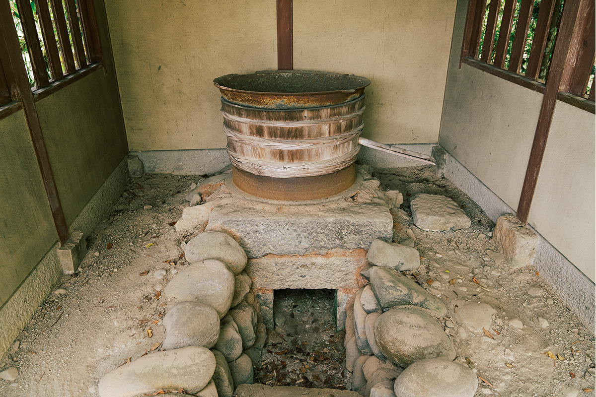
Тур
Что можно сделать на винокурне
Из 27 винокурен двенадцать участвуют в программе «Кума-сётю: туризм по винокурням» и предлагают особые программы. Дело не ограничивается экскурсией и дегустацией. В «Фукано» можно заложить сусло и перегнать сётю, в «Дзёраку» поставить фруктовый ликёр, в «Ямато-ити» попробовать перегонку по образцу эпохи Мэйдзи, в Ohishi Shuzohjyo заложить свою выдержку в бочке, в Rokuchoshi и «Фукуде» собрать собственный купаж, в «Такате» сделать свою этикетку, а в «Сэнгэцу» выпить сётю из традиционной посуды «гара» и «тёку».
Знать что-то о сётю заранее не нужно. Дегустация разрешена с 20 лет, но участвовать могут все, и главное здесь разговоры с мастерами-винокурами и работниками.
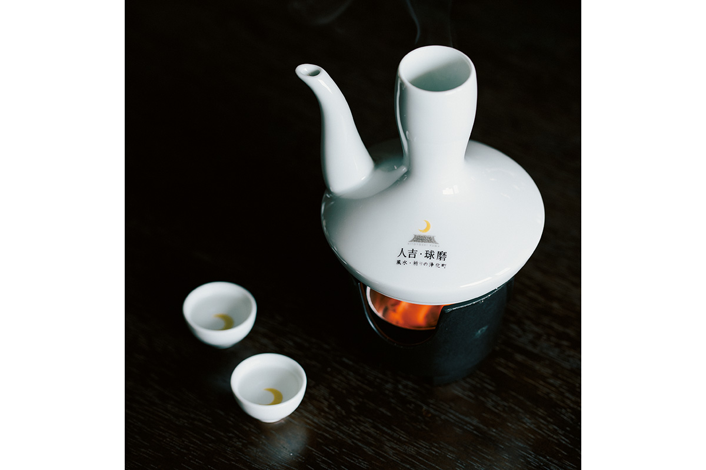
Кума-сётю пьют здесь больше пятисот лет, и он стал частью местной жизни. Вкус его сильно зависит от земли, и после поездки этот вкус кажется уже немного своим.
Сусло
Заложить сётю по старинке, в глиняных кувшинах, можно в три приезда в разные дни: первое сусло, второе сусло и перегонка. Для готового сётю делают свою этикетку, а бутылку потом присылают по почте.
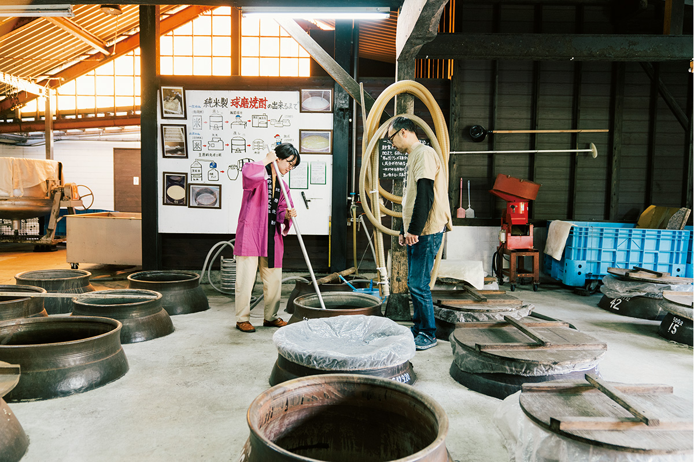
Выдержка
Винокурня Ohishi Shuzohjyo много занимается долгой выдержкой, у неё есть и сётю из одной бочки. На экскурсии в бутылку опускают палочку из бочкового дерева на выбор: сакура, японский дуб мидзунара или белый дуб. Дальше сётю зреет уже дома.
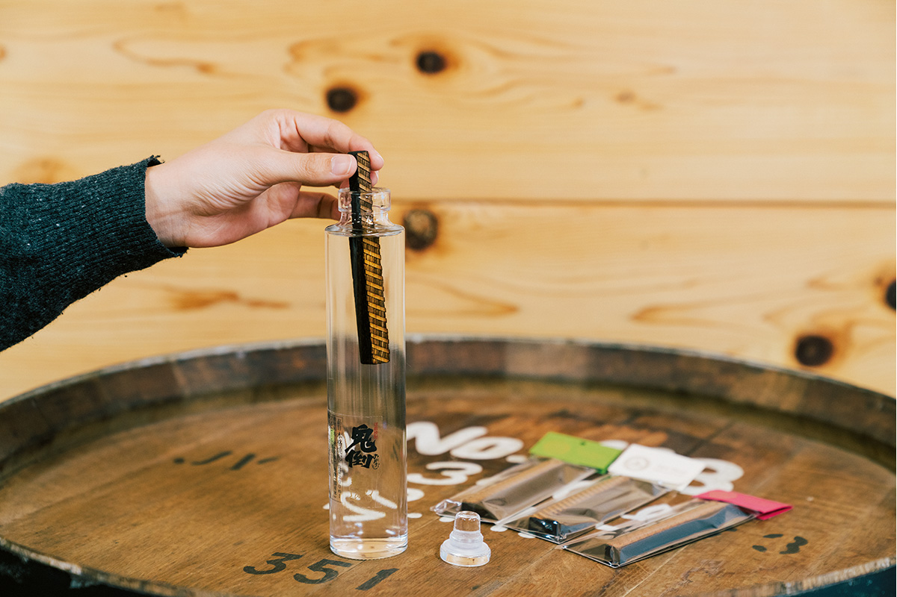
Купаж
«Выдержанный сётю после купажа становится ещё вкуснее»
глава винокурни Rokuchoshi
На его уроке смешивают несколько выдержанных сётю Rokuchoshi, и становится понятно, какое это тонкое искусство.
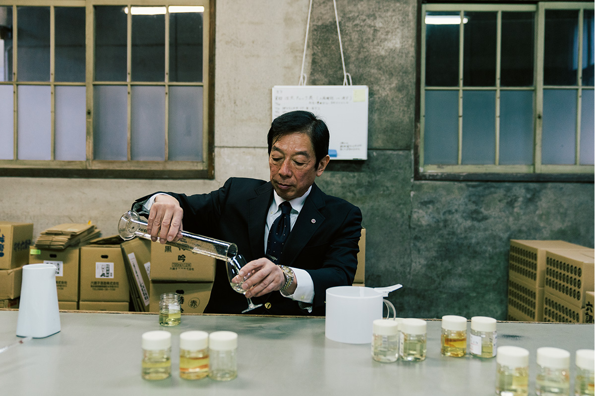
Как пить
В «Сэнгэцу» сётю греют в «гара» и пьют из «тёку». Наливают «Камэ Сэнгэцу», старый сётю, долго выдержанный в глиняных кувшинах. У него особый аромат глины и мягкий вкус, а в подогретом виде аромат и сладость становятся ещё заметнее.
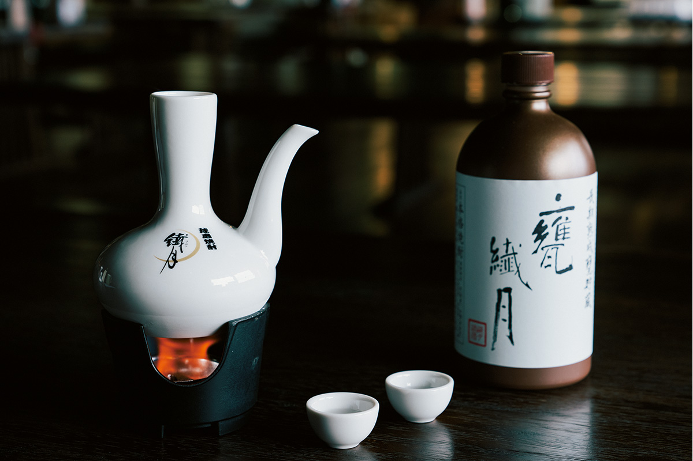
Фукано
Кувшины эпохи Эдо
Винокурню «Фукано» основали в 1823 году. Первое сусло для всех сётю, которые перегоняют при атмосферном давлении, здесь ставят в глиняных кувшинах, сделанных ещё в эпоху Эдо: говорят, только они дают особую мягкость. Главная марка «Хомарэ-но цую» сделана целиком по-старому: сусло в кувшине, перегонка при атмосферном давлении, выдержка тоже в кувшине. В 2021 году она получила платиновую награду Kura Master в категории рисового сётю.
«Хотим сохранить старый вкус и при этом пробовать новые сётю»
глава винокурни «Фукано»
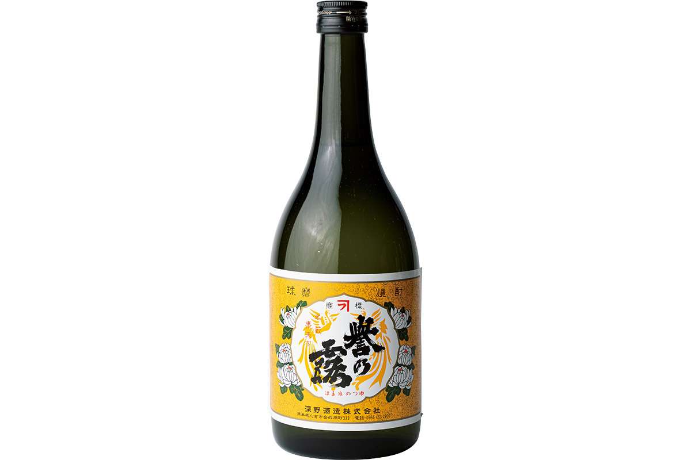
Винокурня «Фукано»
- Адрес
- префектура Кумамото, Хитоёси, Аинохару-мати, 333
- Телефон
- +81 966-22-2900
- Часы работы
- 9:00–16:30
- Выходные
- воскресенье
- Цены / Вход
- закладка сусла 10 000 иен за один день (по записи)
- Сайт
- shop-fukano.jp
Ohishi Shuzohjyo
Сётю от своего риса
Ohishi Shuzohjyo стоит в деревне Мидзуками, в верховьях реки Кума. Здесь сами выращивают сырьё: рис, а ещё батат и тыкву.
«Сётю из риса, выросшего на этой земле, и здешней воды не может быть невкусным»
исполнительный директор Ohishi Shuzohjyo
Отправная точка для него «сётю, который хочется пить самому». Марку «Рэсэна» назвали в честь его дочери. Её перегоняют при пониженном давлении, поэтому вкус мягкий, с ярким ароматом и полнотой. В 2020 году она получила серебро в категории сётю на токийском конкурсе виски и крепких напитков.
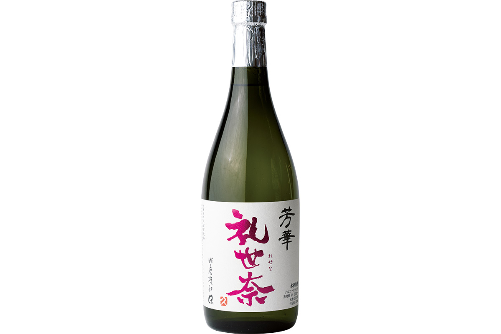
Ohishi Shuzohjyo
- Адрес
- префектура Кумамото, уезд Кума, Мидзуками, Ивано, 1053
- Телефон
- +81 966-44-0001
- Часы работы
- 8:00–17:00
- Выходные
- воскресенье
- Цены / Вход
- экскурсия с бочковой выдержкой 2500 иен (по записи)
Rokuchoshi
Этикетка Кэйсукэ Сэридзавы
Исследовательница сладостей, выросшая в городке у самой границы префектуры Кумамото, знала сётю Rokuchoshi с детства. Ей всякий раз хочется отбить ритм в ладоши: виной тому буквы, бегущие по этикетке, и красный круг. Марка была так привычна, что лишь взрослой она узнала, кто нарисовал этикетку: Кэйсукэ Сэридзава.
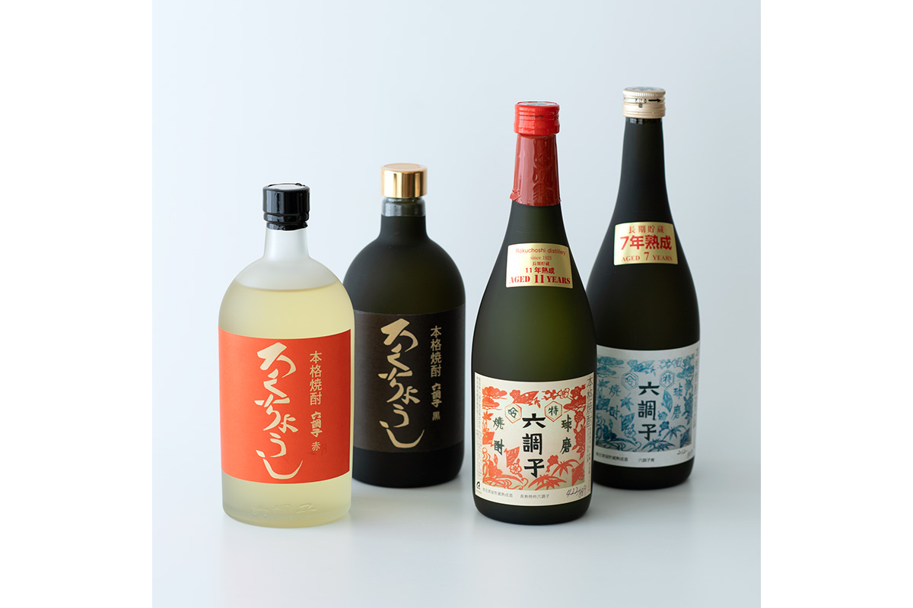
Rokuchoshi ставит сусло на подземной воде из бассейна реки Кума и хранит старые приёмы. Сётю перегоняют при атмосферном давлении, разливают в бочки и подолгу выдерживают, пока вкус и аромат не придут в равновесие. Он мягкий и цельный, со свежим ароматом и чистым послевкусием.
«Сётю станет мировым напитком, сильнее скотча»
глава винокурни Rokuchoshi
С этой мыслью здесь держатся двух правил: перегонка при атмосферном давлении и долгая выдержка в бочках. Хранение тоже долго изучали, и в бочковом хранилище создали условия, близкие к Шотландскому высокогорью. По словам главы винокурни, выдержка даёт аромат перезрелых фруктов и густой вкус. «Кодай икко» собран с участием тридцатилетнего сётю, и на токийском конкурсе виски и крепких напитков он два года подряд, в 2020 и 2021 годах, получал высшее золото.
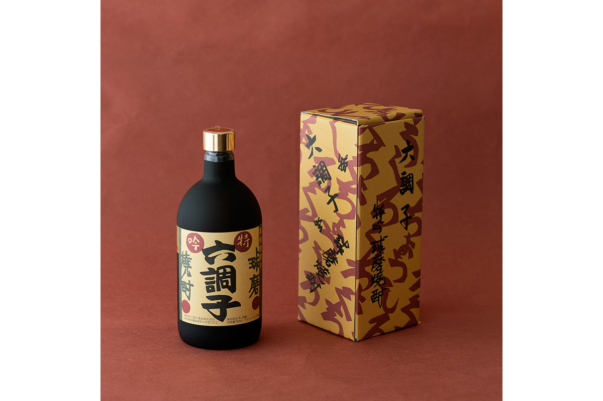
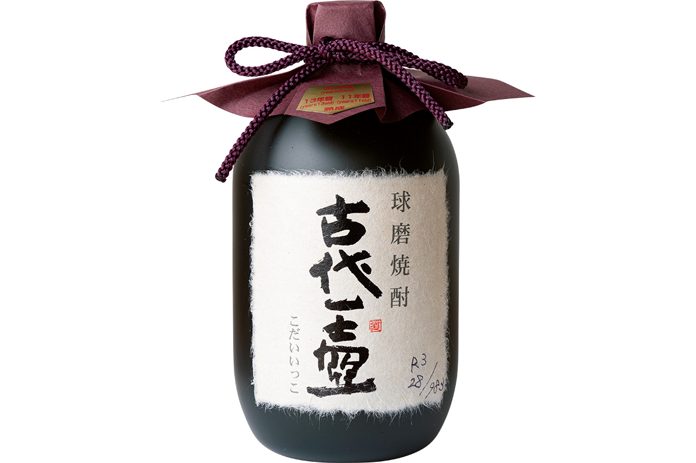
В галерее у входа в контору стоят ширмы, собранные из оригинальных эскизов Сэридзавы для винокурни.
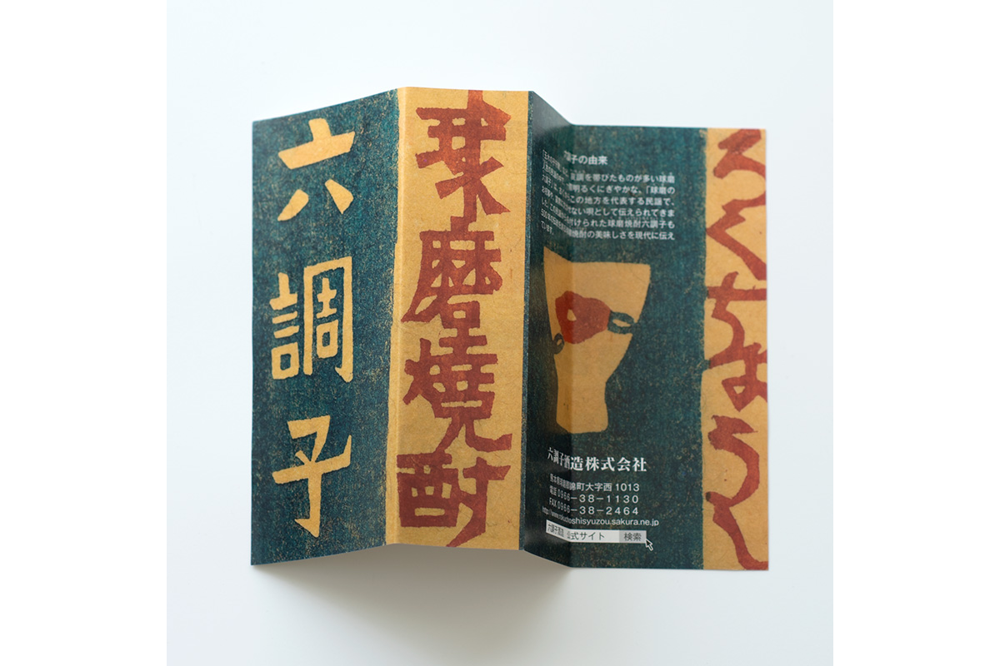
Rokuchoshi
- Адрес
- префектура Кумамото, уезд Кума, Нисики, Ниси, 1013
- Телефон
- +81 966-38-1130
- Часы работы
- 8:00–17:30
- Выходные
- суббота, воскресенье
- Цены / Вход
- экскурсия и урок купажа 2500 иен (по записи)
Сэнгэцу
Шестое поколение мастеров
«Сэнгэцу» каждый день без выходных проводит экскурсии и бесплатную дегустацию, а на территории есть даже ножная ванна с водой онсэна. С основания в 1903 году здесь работают мастера-винокуры родом из Хитоёси и Кумы, и сейчас вкус хранит уже шестое поколение. В 2021 году сётю «Сэнгэцу» получил платиновую награду Kura Master в категории хонкаку-сётю и авамори.
«У нас есть всё: от лёгких сётю до насыщенных из бочки и старых выдержанных. „Кавабэ“ делаем из воды реки Кавабэ, лучшей в Японии по качеству, и риса из деревни Сагара»
глава винокурни «Сэнгэцу»
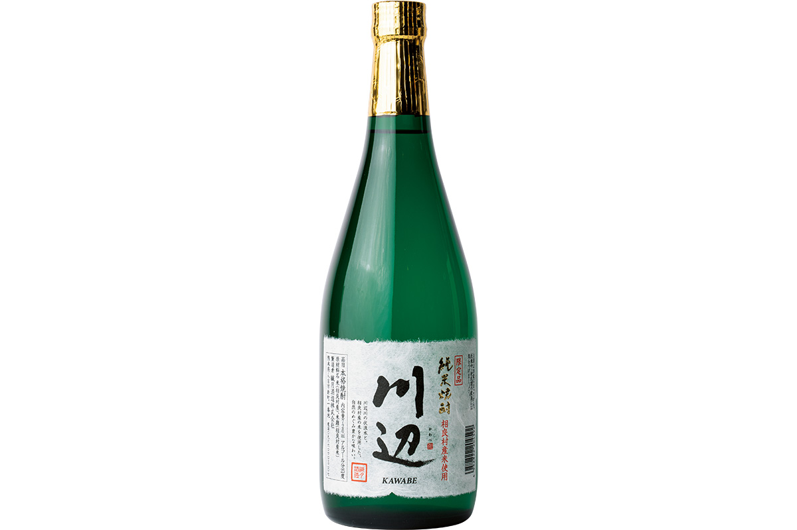
Винокурня «Сэнгэцу»
- Адрес
- префектура Кумамото, Хитоёси, Син-мати, 1
- Телефон
- +81 966-22-3207
- Часы работы
- 9:00–17:00 (последний вход 16:30)
- Выходные
- без выходных
- Цены / Вход
- особая экскурсия и «гара-тёку» в зале с татами 2500 иен (по записи)
- Сайт
- sengetsu.co.jp
Среди 27 винокурен края есть и «Хаяси», «Насу», «Киносита» и «Такахаси»: их сётю можно найти в лавке «Итигоя» и в барах Хитоёси.
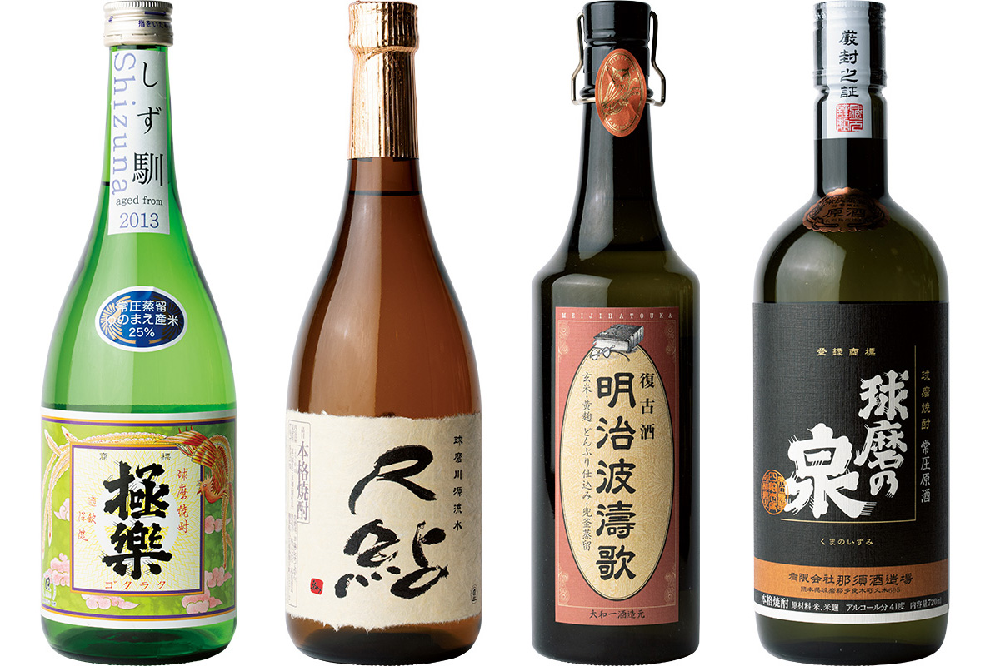
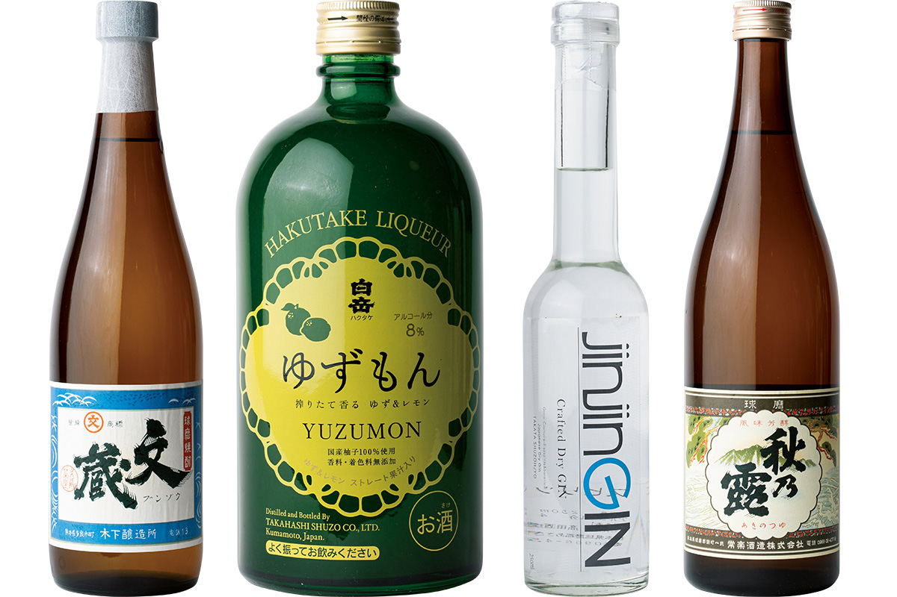
Лавка
«Итигоя»: бутылка по вкусу
Лавку «Итигоя» держит оптовая торговля сётю «Торигоэ сётэн». Здесь кума-сётю, ликёры и сувениры Хитоёси и Кумы. В 2026 году лавка переехала из центра Хитоёси в новое здание чуть дальше от центра.
«Кума-сётю можно разделить на четыре типа: лёгкий, насыщенный, ароматный и с характером. Свой вкус найдётся обязательно, спрашивайте»
глава лавки «Итигоя»
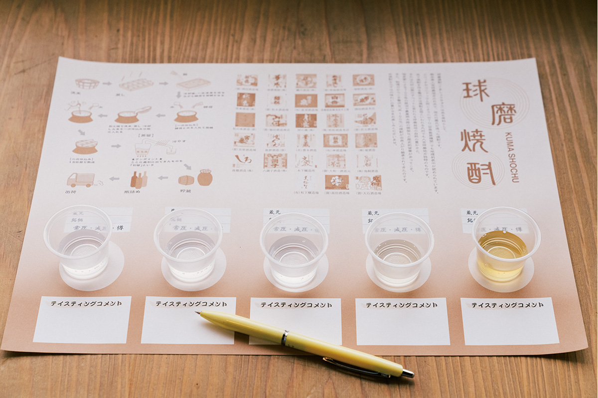
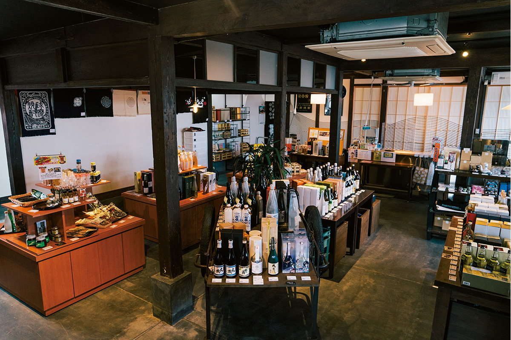
«Итигоя»
- Адрес
- префектура Кумамото, Хитоёси, Ниси-Маками-мати, 2301-1
- Телефон
- +81 966-22-2374
- Часы работы
- 10:00–18:00
- Выходные
- среда
- Сайт
- ichigoya.co.jp
Рёкан
Ayunosato: сётю у реки
Пробовать кума-сётю можно не только на винокурнях. Рёкан Ayunosato на онсэне Хитоёси стоит на самом берегу реки Кума. Кухня строится на местных продуктах, вода из собственного источника мягкая для кожи, а каждый сотрудник работает «консьержем по Хитоёси».
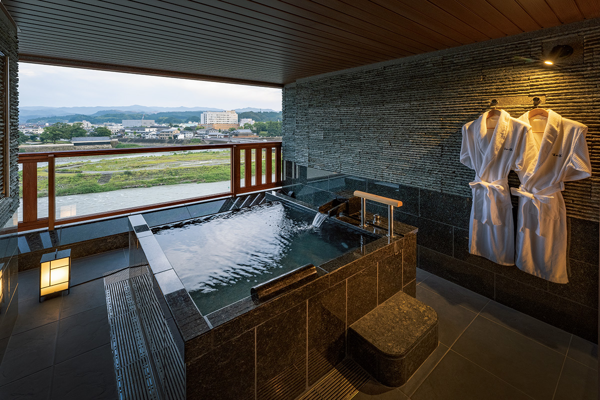
Для любителей сётю здесь две остановки. В лаунже около 100 сортов кума-сётю, и их можно пробовать бесплатно. В баре «Юбагава» собраны сётю всех 27 винокурен, а за стойкой стоит мастер-винокур винокурни «Хаяси». Здесь же смешивают коктейли на кума-сётю.
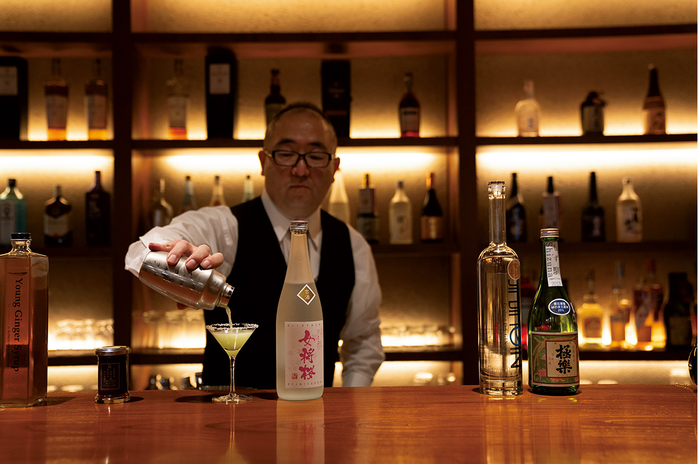
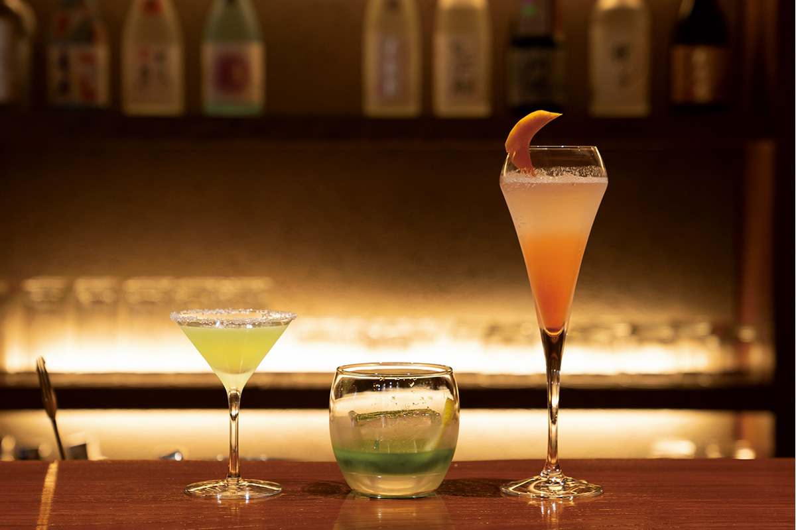
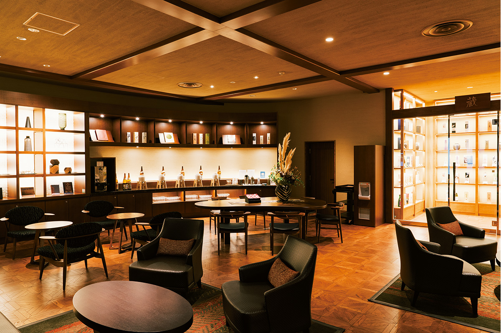
Ayunosato
- Адрес
- префектура Кумамото, Хитоёси, Коконока-мати, 30
- Телефон
- +81 966-22-2171
- Цены / Вход
- от 19 800 иен с человека с ужином и завтраком
- Сайт
- ayunosato.jp
Фото: Вакана Баба, Ацуси Ямахира.